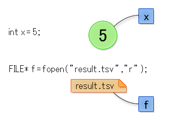

これまで紹介したプログラムでは、処理対象となる入力データは以下の 2 種類でした。どちらの入力データも簡単にプログラム中で扱うことができますが、扱いたい量が大きい場合や頻繁に変更したい場合には使い勝手がよいとはいえません。 大量の入力データを扱うプログラムでは、ファイルからデータを入力したほうが便利です。
- 変数や配列の初期値
- scanf 関数を使いキーボードから入力した値
例としてテストの採点を取り上げます。次のような状況を考えてください。
- 30 名の学生がいるクラスでテストを行い、採点を行った。
- 各学生の名前と点数は TSV 形式でファイルに格納した。1 人の学生の名前と点数は 1 行にまとめて次のような順で書かれているとする。
《名前》 《国語》 《英語》 《数学》 《物理》 《化学》 《生物》 《地理》 《歴史》TSV 形式とは Tabular Separated Values の略です。この形式では、ひとかたまりのデータを各行にタブ文字で区切って並べます。例では、1 行ごとに異なる学生の点数データを書きます。それぞれの科目の点数は、1 行の中にタブ文字で区切って並べます。表計算ソフト OpenOffice.org Calc や Microsoft Excel を使っているなら、シートのデータを TSV 形式でファイルに書き出すことができます。 Excelでは「テキスト（タブ区切り）（*.txt）」を選択すれば TSV 形式で書き出せます。なお「タブ文字」とは複数の半角スペースとおなじ役割を持つ特殊な文字です。タブ文字を入力するには、キーボード左側にある Tab と書かれたキーを 押してください。なお、半角スペース何文字分を表すのかは表示環境によって異なりますが、多くの場合は半角スペース 4 文字分とされることが多いようです。もともとは字下げ（インデント）を簡単におこなうために用意されました（半角スペースキーを何度も押すよりも、Tab キーを一度押せばすむため）。タブ文字は通常の文書ではほとんど登場しないため、今回のようにデータの区切りを表す文字としても利用されます。たとえば、半角スペースやコンマを区切り文字にした場合、データの中に半角スペースやコンマが登場する場合、区切り文字なのかデータなのかを区別できなくなってしまいます。タブ文字ならば、利用頻度が少ないため、区切り文字に向いているというわけです。これから作成するプログラムは、上のような TSV 形式のファイルを読み込み、各学生について、以下の情報を計算することにします。
- 全教科の平均点
- 全教科中の最高点
- 全教科中の最低点
計算結果は以下の形式でファイルに書き込むものとします。
《名前》,《平均点》,《最高点》,《最低点》ファイルを開く、閉じる
コンピュータ上のファイルは、すべて OS（オペレーティングシステム、Windows や Mac OS のこと）が管理しており、ファイルの読み書きをおこなうには OS に依頼して代行してもらわなければなりません。C言語プログラムでファイルを扱うときも例外ではなく、そのための手続が必要です。C言語プログラムからファイルを扱うときには、まずファイル入出力をおこなう準備を OS に依頼し、該当のファイルを扱うためのチケットのようなものを受け取ります。 この処理をファイルを開く（open する）といいます。受け取るチケット（もちろん実際のチケットではなく、概念上のものです）は、FILE* という特別なデータ型の値です。このようなファイル入出力の準備は fopen 関数を呼ぶことで実行します。変数 x の値は 5、変数 f の値はファイル result.tsv にアクセスするためのチケット
例えばファイル result.tsv を扱えるようにするために open する（開く）ときは次のように fopen 関数を呼びます。/* ファイルを読み込み用で開く */
FILE* f = fopen("result.tsv", "r");fopen 関数の戻り値は FILE* 型ですが、* という記号の意味について気になるかもしれません。これについては次章で説明します。今回は FILE* という最後に * のついた特別な名前の型である、とだけ理解してください。目的のファイルが OS によって書き込み禁止に設定されている場合、そのファイルを書き込みのために開くことはできません。 しかしそのファイルを読み込みのために開くことはできます。 このため、C言語でファイルを開くときは、そのファイルからデータを読み込むのか、書き込むためなのか、目的を明示的に指定する必要があります。 これを指定するのが fopen 関数の 2 つめの引数です。上のプログラムでは
"r"の部分がそれにあたります。基本的なものを以下の表にまとめます。
文字列 ファイルを開く目的 r 読み込み w 書き込み（既存の内容はすべて破棄される） a 書き込み（ファイルの最後に追記される） ファイルを fopen 関数で開いたら、そのファイルの内容を読み込んだり、新しい内容を書き込んだりすることができます。一方、そのようなファイルの入出力処理が終わったら、それを OS に知らせなければなりません。この操作をファイルを閉じる（close する）といいます。fclose 関数を呼ぶことで、その操作を実行できます。関数の引数は fopen 関数の戻り値です。この引数によって、どの fopen 関数で開いたファイルを閉じるのか区別します。
/* ファイルを閉じる */
fclose(f);読み込み
fopen 関数の呼び出しから fclose 関数の呼び出しまでの間は、ファイルの内容を読み込んだり、新しい内容を書き込んだりできます。ファイルの内容を読み込むには、例えば fgets 関数を使います。fgets 関数はファイルから 1 行分（行頭から改行文字まで）のデータを読み込む関数で、以下のように使います。/* 読み込み目的で result.tsv を開く */
FILE* f = fopen("result.tsv", "r");
char line[256];
fgets(line, 256, f);
fclose(f);fgets 関数の第 1 引数は、読み込んだ文字列を保存する配列、第 2 引数はその配列の要素数、第 3 引数は 1 行分読みたいファイル、すなわち fopen 関数の戻り値です。これは FILE* 型の値です。例では 2 行目の fopen で開いたファイルから、4 行目の fgets 関数が 1 行分読み込みます。読み込む行は第 2 引数で渡した値より長さ（文字数）が短くなくてはいけません。それより長いと第 1 引数の配列に入りきらなくなるので、プログラムの動作が不安定になります。fgets 関数は何度も呼ぶことができます。fopen 関数で開いたファイルに対して fgets 関数を何度も呼ぶと、呼ぶ度にファイルの先頭から 1 行ずつ順に読み込まれます。ファイル中の全ての行を読み込んでそれ以上読み込む行がなくなると、fgets 関数は NULL という特別な定数を戻り値として返します。これを利用すると、ファイルの内容を全て読み込んで画面に表示するプログラムを書くことができます。下のプログラムを見てください。#include <stdio.h>
int main() {
FILE* f = fopen("result.txt", "r");
char line[256];
while (fgets(line, 256, f) != NULL) {
printf("%s", line);
}
fclose(f);
return 0;
}fgets 関数は行頭から改行文字（行末）までを第 1 引数の配列に保存します。また文字列の終わりを意味するヌル文字もその配列の末尾に保存されます。保存される場所は改行文字が保存されている要素の次の要素です。8 行目の printf 関数の第 1 引数が"%s\n"ではなく"%s"であることに注意してください。前者では、第 2 引数の配列に保存された文字列を表示した後、改行文字\nを表示します。後者では文字列だけが表示されます。fgets 関数を呼び出した後、配列 line は改行文字を含みますから、前者の"%s\n"では、printf 関数が読み込んだ行の内容を表示した後、2 回改行してしまいます。その結果、全体としてファイルの内容が表示されるものの、行と行の間に空行が 1 行はさまって表示されてしまいます。TSV 形式の処理
これでファイルの内容を 1 行ずつ順に取り出すことができるようになりました。次は、TSV 形式になっている各行を処理して、個々の値を取り出します。ここでは sscanf 関数を使います。これは第 5 章で説明した scanf 関数に似た関数です。例えば、次のプログラムは、文字列の中に整数値が 1 つだけ含まれているとき、それを取り出して int 型の変数に代入します。int value;
char number[] = "30";
sscanf(number, "%d", &value);このプログラム（の一部）を実行すると value の値は 30 となります。配列 number の中身が"30"という文字列だからです。整数値の 30 と文字列の 30 は大きく異なります。実際、配列 number の 0 番目の要素は文字 3 の文字コードの番号、1 番目の要素は文字 0 の文字コードの番号です。sscanf 関数の第 3 引数として渡す変数 value の前には & がついていますが、この & の意味は次章で説明します。本章では、そういうものだ、と理解しておいてください。では、sscanf 関数を使って TSV 形式の文字列を処理し、名前と教科ごとの点数を取得するプログラムを示します。#include <stdio.h>
int main() {
char line[] = "taro\t60\t53\t32\t24\t61\t94\t56\t83";
char name[256];
int score[8];
sscanf(line, "%s\t%d\t%d\t%d\t%d\t%d\t%d\t%d\t%d",
&name, &score[0], &score[1], &score[2], &score[3], &score[4], &score[5], &score[6], &score[7]);
printf("名前:%s\n", name);
printf("国語:%d点 英語:%d点 数学:%d点 物理:%d点\n", score[0], score[1], score[2], score[3]);
printf("化学:%d点 生物:%d点 地理:%d点 歴史:%d点\n", score[4], score[5], score[6], score[7]);
return 0;
}sscanf 関数の第 3 引数以降の引数は、全て先頭に & がつきます。プログラムの実行結果は次のようになります。名前:taro
国語:60点 英語:53点 数学:32点 物理:24点
化学:61点 生物:94点 地理:56点 歴史:83点プログラムの 4 行目と 9 行目の文字列中にはタブ文字\tが何個も含まれています。\tとあるところは実際にはタブ文字 1 文字です。例えば配列 line の要素は 0 番目から順に、t、a、r、o でその次の 4 番目の要素はタブ文字（の文字コード）です。その次は 6、0 で、その次もタブ文字です。Mac OS 上で \ 記号を入力するには、日本語入力の状態で Option+¥ キーを押します。なお、\ 記号は Windows 上では円記号として表示され、Mac 上ではバックスラッシュとして表示されます。これには歴史的な経緯があるので、興味あるかたはこちらをご覧ください。読み込んだ点数を処理する
ここまでに解説した方法を使うと、TSV 形式のファイルを読み込み、個々の点数を取り出すことができます。次は読み込んだ点数の平均点・最高点・最低点を求めます。以下では、読み込んだ個々の点数は配列の各要素に保存されているとします。平均点を求める
平均点は比較的簡単に求めることができます。 for 文を使ってすべての点数を合計し、合計値を配列の要素数で割るだけです。 このとき、平均点は小数点以下も表示したいため、変数のデータ型を整数を表す int 型から浮動小数点数を表す double 型に変更するのがポイントです。 これは 11 行目で行っているように、変数名の前に変更したいデータ型を括弧で括って書くことで実現できます。#include <stdio.h>
int main() {
int score[8] = {60, 53, 32, 24, 61, 94, 56, 83};
/* 平均点を求める */
int total = 0;
for (int i = 0; i < 8; i = i + 1) {
total = total + score[i];
}
double average = (double)total / 8;
printf("平均値 : %.2f\n", average);
return 0;
}実行結果はつぎのようになります。平均値 : 57.88点数順に科目を並べる
次に各人の教科の中の最高点と最低点を求めます。もっと簡単な求め方もありますが、ここではあえて各教科の点数を大きい順に並べてみて、最初の教科を最高点、最後の教科を最低点とする方法をとります。配列の数値を大きな順もしくは小さな順に並べ替える処理のことをソート（sort）と呼びます。ソートの方法は、効率や制限などからさまざまな手法が知られています。今回はその中で非効率ながらもっとも単純なバブルソートという手法を紹介します。バブルソートの方法はとてもシンプルです。 ここではバブルソートで大きな値から順に（これを降順と呼びます）並べ替えることを考えます。
- 注目している配列の要素 a とその次の要素 b を比べる
- 要素 a よりも要素 b が大きい場合、各要素の示す値を入れ替える
- 1 〜 2 の処理を全配列の要素（最後の要素をのぞく）で実施する
- 1 〜 3 の処理を配列の要素数分繰り返す
バブルソートをおこなうプログラムを以下に示します。
#include <stdio.h>
/* 配列を表示する */
void printScore(int score[], int size) {
for (int i = 0; i < size; i = i + 1) {
printf("%d ", score[i]);
}
printf("\n");
}
int main() {
int score[] = {60, 53, 32, 24, 61, 94, 56, 83};
int size = sizeof(score) / sizeof(score[0]); /* 配列の要素数を計算 */
/* 並べ替え前の配列を表示する */
printScore(score, size);
/* 点数の高い順に並べる */
/* 3. 配列の要素数文繰り返す */
for (int i = 0; i < size; i = i + 1) {
/* 2. 全配列の要素(最後の要素をのぞく)で実施する */
for (int j = 0; j < size - 1; j = j + 1) {
/* 1. 要素aよりも要素bが大きい場合、各要素の示す値を入れ替える */
if (score[j] < score[j+1]) {
int lesser = score[j];
int greater = score[j+1];
score[j] = greater;
score[j+1] = lesser;
}
}
}
/* 並べ替え後の配列を表示する */
printScore(score, size);
return 0;
}13 行目のint size = sizeof(score) / sizeof(score[0]);は、C言語で配列の要素数を計算するのによく使われる技法です。変数 size の値は 8 となります。sizeof は特別な演算子で変数がメモリ上で占める大きさを計算します。上の例で score と書いてあるところを別な配列名で置き換えると、その配列の要素数が変数 size の値になります。実行結果を示します。配列 score の 8 個の要素が並べ替えの前後でどう変わったか表示されます。60 53 32 24 61 94 56 83
94 83 61 60 56 53 32 24ファイルへの書き込み
ファイルへの書き込みをおこなうため、fprintf 関数の使い方を説明します。この関数は fopen 関数で開いた状態のファイルへ文字列を書き込みます。使い方は printf 関数に似ています。/* 書き込み用に summary.txt を開く */
FILE* f = fopen("summary.txt", "w");
char name[] = "taro";
double average = 57.88;
int max = 94;
int min = 24;
fprintf(f, "%s, %f, %d, %d\n", name, average, max, min);
fclose(f);fprintf 関数は第 1 引数が FILE* 型の値であることを除けば、printf 関数と使い方は同じです。%sや%dといった部分が第 3 引数以降の値で置き換わります。末尾に\nがあるので、改行文字も一緒にファイルに書き込まれます。したがって上のプログラムはファイル summary.txt に一行書き込んで終了することになります。これで、ファイルの読み込みに続いて、書き込みもできるようになりました。この二つの処理を組み合わせれば、「ファイルを 1 行ずつ読み込み、その行を 1 行ずつファイルへ書き込む」という処理ができるようになります。 これはファイルの内容をコピーをすることに他なりません。ファイルのコピーをおこなうプログラムを以下に示します。#include <stdio.h>
int main() {
FILE* f = fopen("result.txt", "r");
FILE* g = fopen("summary.txt", "w");
char line[256];
while (fgets(line, 256, f) != NULL) {
fprintf(g, "%s", line);
}
fclose(f);
fclose(g);
return 0;
}このプログラムを実行すると、summary.txt という名前のファイルが新しく作成されます。このファイルが result.txt と同じ内容になっていることを確認してください。
9 行目の fprintf 関数の第 2 引数には%sの後ろに改行文字\nが含まれていません。これは 8 行目の fgets 関数を実行して配列 line に保存された文字列が、末尾に既に改行文字を含んでいるからです。%sは配列の中身を全てファイルの中に書き込むことを意味しますから、末尾の改行文字も書き込まれます。fprintf 関数の引数を"%s\n"とすると、コピーされたファイルの中身をエディタ等で見たとき、元のファイルの内容が 1 行ずつ間をあけて表示されてしまいます。
ここまでで説明したプログラムを組み合わせて、以下の処理をおこなうプログラムを作成してください。30 名の生徒がいるクラスで、テストを行い、採点を行いました。各学生の名前と点数は以下のような形式で TSV 形式のファイルに格納されています。
《名前》 《国語》 《英語》 《数学》 《物理》 《化学》 《生物》 《地理》 《歴史》TSV 形式のファイルを読み込み、各学生について、以下の集計結果を計算するプログラムを作成してください。
- 全教科の平均点
- 全教科中の最高点
- 全教科中の最低点
計算結果は以下の形式でファイルに書き込むものとします。
《名前》,《平均点》,《最高点》,《最低点》読み込むTSV形式のファイルの中身は以下の通りです。(空白部分はタブ文字と考えてください。)
tanimoto 60 53 32 24 61 94 56 83
matumura 89 93 34 63 78 55 78 67
nakano 53 31 35 77 61 33 41 30
obata 90 28 73 76 34 97 43 98
murata 77 32 31 27 98 74 74 47
yamasaki 30 31 23 68 76 84 32 97
katumoto 97 97 31 49 68 97 48 78
sakai 37 44 77 46 43 97 94 68
ishida 77 89 24 65 27 47 54 65
saito 76 32 68 76 32 65 49 87なお、このファイルを作成する方法については資料を見て下さい。
演習 8−1のプログラムを改良して以下の情報を計算し、ファイルの最後に書き込むようにしてください。
- 全学生の全教科の平均点
- 全学生の全教科中の最高点
- 全学生の全教科中の最低点
Copyright 2009-2011 the Compview project,
Tokyo Institute of Technology. All rights reserved.
{kind=link}